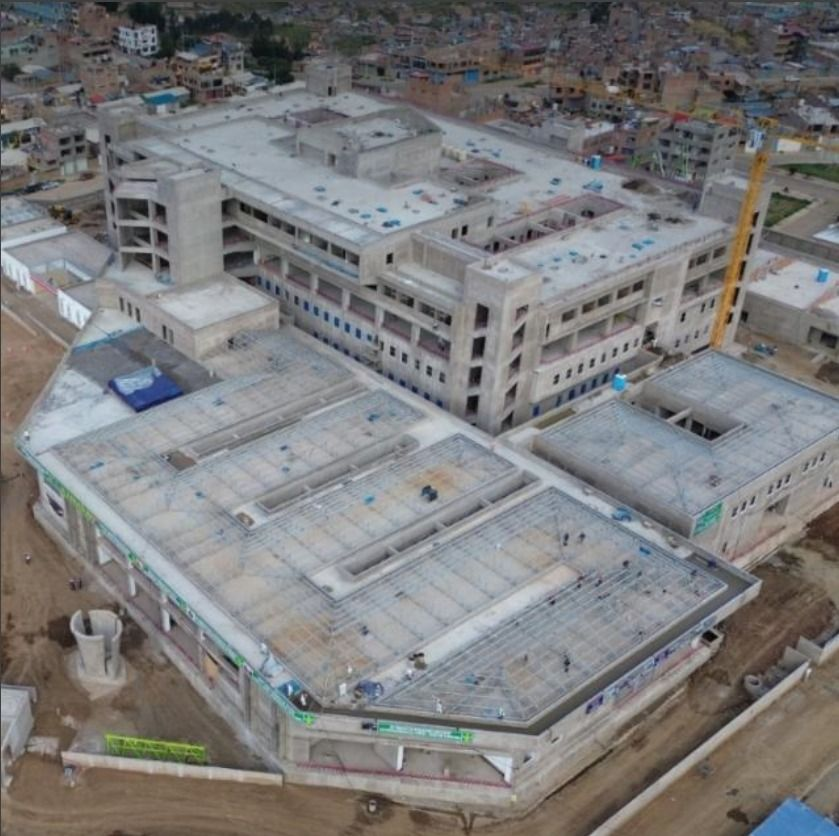
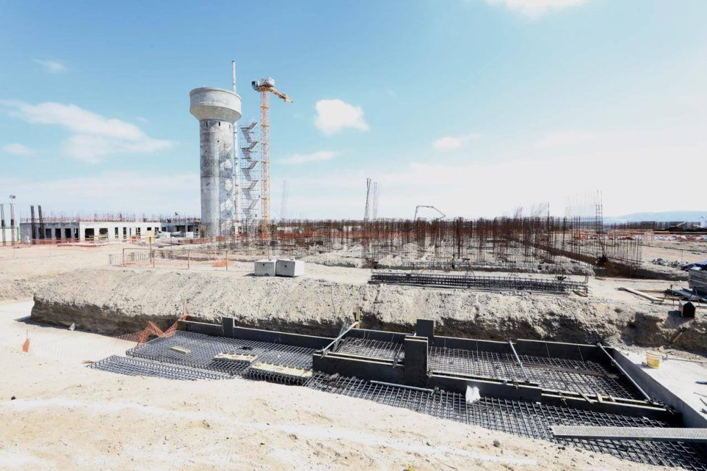
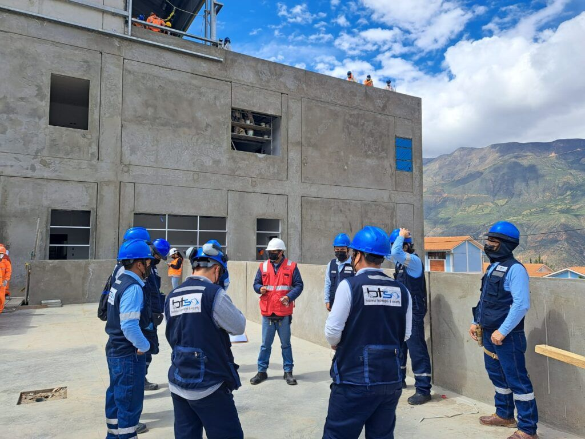
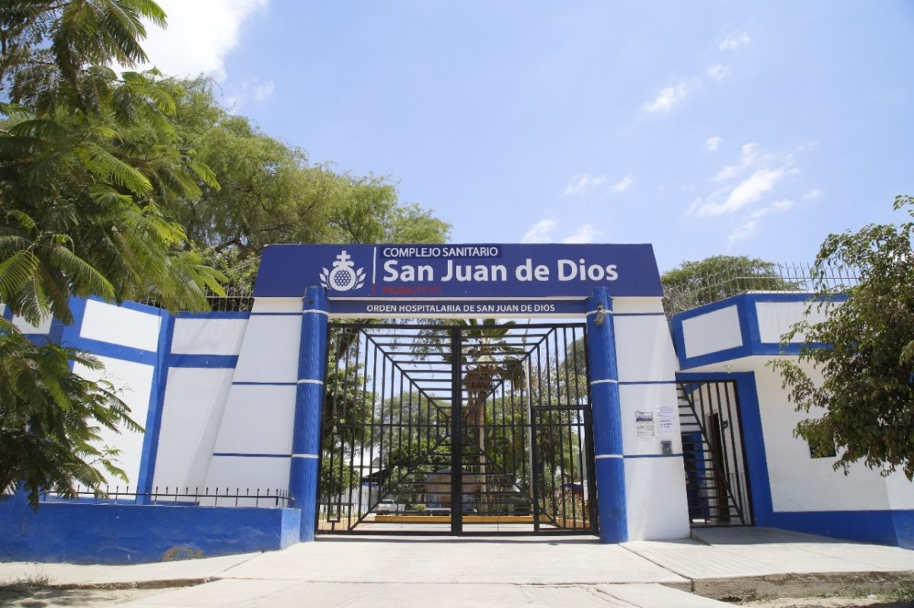
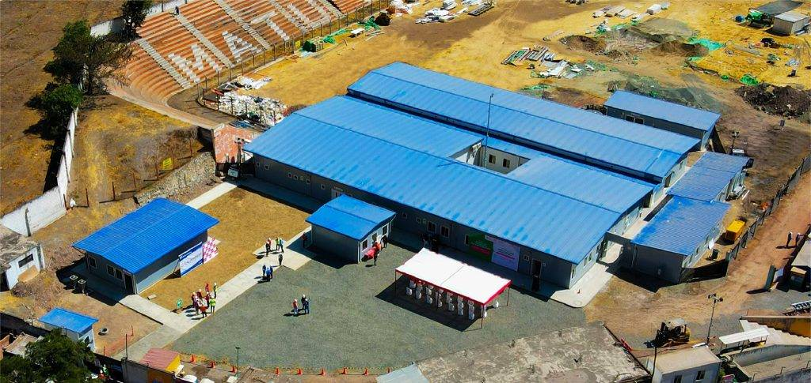
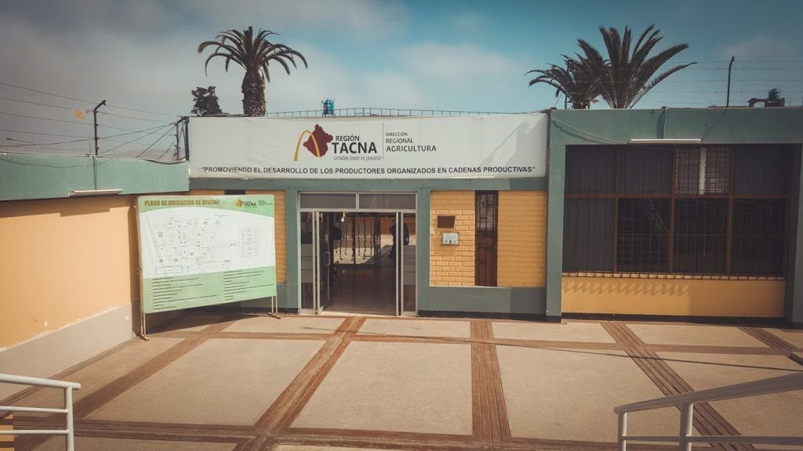
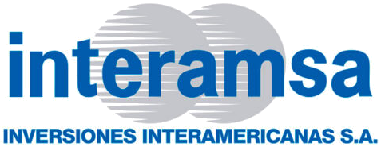

Obras
Obras en las que hemos participado
Hospitales, un penal y una sede regional, de Tacna a Piura. En cada una, BTS se encargó del diseño, el suministro o la instalación de sistemas de comunicaciones y seguridad.
-

Salud · Puno
Hospital del Altiplano
Cliente: Consorcio Hospital Altiplano · obra de EsSalud, en ejecución
Suministro de sistemas de comunicación
Sistemas
-

Penitenciario · Ica
Mega Penal de Ica
Expediente técnico de los sistemas de seguridad y comunicaciones
Sistemas
-

Salud · Áncash
Hospital de Yungay, nivel II-1
Implementación e instalación de sistemas de comunicaciones y TI
Sistemas
- Videovigilancia CCTV / VMS
- Control de acceso y asistencia
- Cableado estructurado y fibra óptica
- Conectividad y seguridad informática
- Diseño e implementación de data center
- Llamada de enfermeras IP
- Relojes IP
- Detección, alarma y extinción de incendios
- Perifoneo y música ambiental
- Implementación de modelamiento BIM
- BMS · gestión del edificio
-

Salud · Piura
Centro de Reposo San Juan de Dios
Central de alarma y sistema de intrusión
-

Salud · Huarochirí, Lima
Hospital de Contingencia de Matucana, nivel II-1
Suministro e instalación de sistemas de comunicaciones
Sistemas
-

Sector público · Tacna
Dirección Regional de Agricultura
DRAT
Videovigilancia y radioenlace entre sedes
Sistemas
Empresas y entidades que han trabajado con BTS

¿Necesita referencias de alguna de estas obras?
Para su licitación o su comité, le contamos qué hicimos en cada una.